扉页
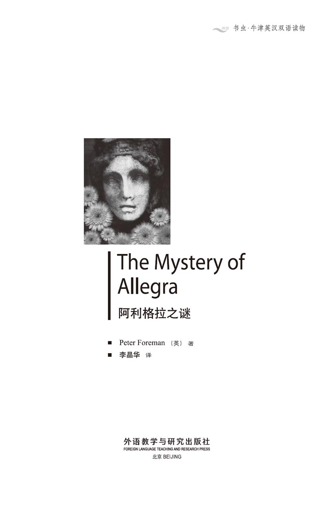
版权页
京权图字：01-2006-3294
Originally published by Oxford University Press, Great Clarendon Street, Oxford. © 2000
This edition is licensed for sale in the People's Republic of China only and not for export therefrom.
'Oxford' is a registered trademark of Oxford University Press.
只限中华人民共和国境内销售，不包括香港特别行政区、澳门特别行政区及台湾省。不得出口。
图书在版编目（CIP）数据
阿利格拉之谜 = The Mystery of Allegra／（英）福尔曼（Foreman, P.）著；李晶华译．—北京：外语教学与研究出版社，2007.7（2014.12 重印）
（书虫·牛津英汉双语读物）
ISBN 978-7-5600-6820-6
Ⅰ．阿… Ⅱ．①福…②李… Ⅲ．①英语—汉语—对照读物②短篇小说—英国—现代 Ⅳ．H319.4：I
中国版本图书馆CIP数据核字（2007）第104932号
出版人： 蔡剑峰
责任编辑：余 军
封面设计：孙莉明
出版发行：外语教学与研究出版社
社 址：北京市西三环北路19号（100089）
网 址：http://www.fltrp.com
版 次：2007年8月第1版
书 号：ISBN 978-7-5600-6820-6
* * *
凡侵权、盗版书籍线索，请联系我社法律事务部
举报电话：（010）88817519 电子邮箱：banquan@fltrp.com
法律顾问：立方律师事务所 刘旭东律师
中咨律师事务所 殷 斌律师
内容简介
内容简介
她5岁零3个月，穿着白色的长睡裙，有一头金发，大大的眼睛像意大利夏日的天空一样湛蓝，声音温柔而甜美。她想要阿德里安带她去找远方的妈妈。
阿德里安放假了，正与父母一同在意大利旅行。一天晚上，他们来到亨德森庄园，决定在此过夜。深夜醒来，阿德里安发现房间里有一个小女孩，她叫阿利格拉，长着蓝色的大眼睛，小手冰凉。阿德里安先是大吃一惊，然后他记起来女主人基娅拉·亨德森说过自己有一个小女儿。可阿利格拉为什么说她妈妈在很远的地方呢？而且阿德里安卧室的门是锁着的，阿利格拉是怎么进来的呢？
阿德里安疑惑不解，决定第二天一早去向阿利格拉的母亲问个究竟，可是，等待他的却是更大的谜团……
THE MYSTERY OF ALLEGRA
THE MYSTERY OF ALLEGRA
She is five years and three months old. She wears a long white nightdress and she has blond hair and big eyes, as blue as an Italian sky in summer. Her voice is soft and sweet, and she wants Adrian to take her to her Mamà, who is a long way away.
Adrian is on holiday, travelling in Italy with his parents. Late one evening they find the Villa Henderson and decide to take rooms there for the night. But Adrian wakes in the middle of the night to find Allegra in his room, with her big blue eyes and cold little hands. At first Adrian is very surprised, then he remembers that Chiara Henderson said she had a little daughter. But why does Allegra say that her mother is a long way away? And Adrian's bedroom door is locked, so how did Allegra get into his room?
Adrian does not understand. He decides to ask Allegra's mother in the morning. But in the morning he has a very big surprise...
目录
1．Allegra One
1
Allegra One
I met Allegra one night in April twelve years ago. I was sixteen years old and she was only five.
I remember that it rained a lot that night and we arrived late at the house. We were driving along a dark road when my mother saw a sign, which said in big letters: Villa Henderson—Bed and Breakfast.
'It's in English!' my mother said. She was surprised because we were on holiday in Italy.
My father turned right and drove along an old road. When we arrived, we saw a big villa with tall black trees around it. There was a light in one of the windows, and on the wall above the door were the words Villa Henderson.
My father knocked at the door and a small woman opened it. She was about sixty and wore strange clothes.
'Are you English?' my father asked.
'Yes, I am,' she answered in a quiet voice.
'We're looking for rooms for the night. Can we stay here?'
'Please come in.'
We went into a long, comfortable room. There was a bright fire in the old fireplace, which gave a beautiful, warm light.
'The weather is very bad,' said the woman. 'It's cold for April. I'll make some tea for you.'
When she went out, we looked around the room. There were lots of English tables and chairs in dark wood, and the walls and floor were of stone. There were two big armchairs in front of the fire and a large black dog was sleeping in one of them.
'I like this room,' said my mother. 'It looks comfortable, but it's beautiful too.'
Just then the woman returned with the tea. Behind her came a woman in a long black dress.
'My name is Margaret Henderson,' said the old woman, 'and this is my daughter Chiara. She has a daughter too, so I'm a grandmother.'
'My daughter is in bed,' smiled Chiara.
She was a tall woman, with long, fair hair and blue eyes. She was perhaps about thirty-five.
'Have you come far today?' she asked.
'Yes,' my father replied. 'We're very tired.'
'Your rooms are ready for you. I'll take you up when you've had your tea.'
So, after tea, we went up some stairs and followed Chiara along a corridor. She stopped at a door and told my parents that it was their room. Then she looked at me.
'Your room is round the corner. Come this way, please.'
We turned right and walked along another corridor. My room was at the end.
'Good night and sleep well,' said Chiara with a smile.
But I didn't sleep well.
I locked the door and after five minutes I was in bed. The house was silent, but I could hear the rain on the window and the strong wind in the trees outside. I slept a little, woke up, then slept again. And then I woke up suddenly. The window shutters were making a loud noise against the wall. I could see that the window was open because the long white curtains were moving in the wind. I got up and closed both the shutters and the window. Now the room was very dark, so I walked with my hands out in front of me, to try and find the light on the table by the bed. My left hand touched the table — and then something took hold of my right arm.
It was a cold little hand. The hair on my neck stood up and my legs began to shake.
'Who is it?' I cried.
At the same time I found the light on the table and turned it on. A little girl in a long white nightdress stood in front of me near the bed. She was looking at me with big eyes, as blue as an Italian sky in summer. Her blond hair was as bright as sunlight round her pale face.
'What a beautiful child!' I thought.
'Hallo. My name's Allegra,' she said.
Her voice was soft and sweet and she spoke English beautifully. But she couldn't say the letter 'r'.
'Did you come in through the window?' I asked.
But she answered me with a question. 'What's your name?'
'Adrian.'
'I'm five years and three months old,' she said. 'How old are you?'
'Sixteen. How did you get in here?'
'Don't be angry with me, Adrian,' she said.
'I'm not angry with you. Don't cry. Tell me your name again.'
'Allegra. It means happy in Italian.'
'What are you doing here, Allegra? What do you want?'
'Will you take me to my Mamà?' she asked suddenly.
I looked at her in surprise. 'But you know where your mother is,' I said.
'Yes, but she's a long way from here.'
'No, she isn't, Allegra. She's in this house.'
'I want to see Mamà. Will you take me, please?'
'No, Allegra. She'll be angry with you because you aren't in bed.'
'Oh no, Mamà was never angry with me,' she said with a little smile. 'But sometimes Papà was angry and I was afraid of him.'
For a while I didn't speak, and I just looked at her. Why did she say 'was' and not 'is' when she spoke about her parents? She was a very strange little girl.
'You must go back to bed now, Allegra,' I said. 'I'm not going to take you to your mother.'
She looked at me, and now her blue eyes were sad.
'Will you take me to Mamà tomorrow then?'
'Yes.'
'Oh, thank you!' she cried happily.
'Now, where is your room?'
'It's next to this one.'
'Okay, let's go.'
And I took her hand, her cold little hand. Just then the window opened again and the wind and rain came in. I went to the window to close it but the curtains flew up in my face and I couldn't see anything. I closed the window. And when I turned round, Allegra wasn't there.
For a minute I just stood still. Then I unlocked my door and went along the corridor. There was a door on the left. I opened it slowly. The room was dark but I could see that it was a child's room. Somebody was sleeping in a bed near the window.
'Good!' I thought. 'She's in bed now.' And I closed the door.
Next morning, after breakfast, we went into the garden. There were beautiful hills and woods around it. I walked round to the back of the house because I wanted to look at the windows of my room and Allegra's room. There was a big tree between them near the wall of the house.
'Perhaps she got out of her window on to the tree, and then got in through my window,' I thought. But it looked a difficult and dangerous thing to do. Possible for an adult perhaps, but not for a girl of five.
When I went back to the front garden, Allegra's mother was there. She was talking to my parents.
'Did your shutters open last night?' she asked. 'I heard a noise.'
'No,' replied my mother. 'But we heard a noise too.'
'It was the shutters in my room,' I said.
'Oh, I'm sorry,' said Chiara. 'Those shutters are very old. But I hope you slept well after you closed them.'
'Shall I tell her?' I thought. Then I said with a smile, 'Yes, I slept well, thank you — but only after your daughter's visit.'
'Allegra?' Chiara was very surprised.
'Yes, she came to my room in the middle of the night.'
'Did she? Well, I know she sometimes walks in her sleep.'
'But...' I began. And I stopped. Again I thought: 'Shall I tell her?'
But I decided not to say that the door was locked. I knew they wouldn't believe me, and I thought that they would laugh at me. So I just said that Allegra was a beautiful child.
'Yes, she is,' Chiara answered. 'But she isn't a very happy girl.'
'Doesn't her name mean happy in Italian?'
'Yes, but I've never met an Italian child called Allegra.'
'Why did you call her Allegra?' my mother asked.
'I don't know. The name came to me suddenly. Perhaps I wanted a happy child.' And Chiara smiled sadly.
Then she turned to the house and called her daughter.
'Allegra! Come downstairs, please!'
'I'm coming!' came a shout from the house.
We heard Allegra on the stairs; then she came out. I looked at her. I looked and looked. But I couldn't believe my eyes.
villa n. a big country house with large gardens 别墅
bed and breakfast (a private house or small hotel that provides) a place to sleep for the night and breakfast the next morning 提供住宿和次日早餐（的私人住家）
fireplace n. the opening in the wall of a room, used for a wood or coal fire to heat the room 壁炉
armchair n. a comfortable chair with sides that you can rest your arms on 扶手椅
tired adj. feeling that you want to deep or rest 疲倦的
corridor n. a long, narrow passage between two rows of rooms in a building 通道；走廊
shutter n. [usu. pl.] one of a pair of wood or metal covers that can be unfolded in front of the outside of a window to block the view or keep out the light 百叶窗
curtain n. a piece of hanging cloth that can be pulled across to cover a window or door 窗帘
touch v. to put your hand or another part of your body on something or someone so that you can feel them 触到，摸到
nightdress n. a piece of clothing, like a thin dress, that women wear in bed 女睡裙
pale adj. (of a person's face or skin) having less than the usual amount of colour （人的脸色或皮肤）苍白的
sweet adj. (of sound) pleasant to listen to 悦耳的，甜美的
unlock v. to unfasten the lock on a door, box etc. 开……的锁
dangerous adj. able or likely to cause danger 危险的
possible adj. able to be done or likely to happen or exist 可能的
adult n. a fully-grown person 成年人
阿利格拉一
1． 阿利格拉一
初遇阿利格拉是12年前4月的一个晚上，那时我16岁，她只有5岁。
记得那天晚上下着大雨，我们很晚才到达住宿的地方。我们的车沿着漆黑的路行驶，妈妈看见一块标牌，上面写着大大的字：亨德森庄园——住宿加早餐。
“是英语！”妈妈惊喜地说。要知道那时我们可是在意大利度假啊。
爸爸开车右转，将车开到了一条旧路上。到了门前，我们看到一座很大的乡村别墅，四周环绕着高大阴森的树木。有一个窗口还亮着灯，正门上方的墙上刻着“亨德森庄园”。
爸爸敲了敲门，开门的是一位瘦小的妇人，60岁上下，穿着怪异。
“您是英国人吗？”爸爸问道。
“是的。”她平静地回答道。
“我们正在找住宿的地方。今晚我们能在这儿过夜吗？”
“请进吧。”
我们走进一间长长的、舒适的房间。古旧的壁炉里火烧得很旺，发出美丽、温暖的光。
“天气太糟了，”老妇人说，“4月份可不该这么冷。我这就去给你们沏些茶。”
她离开后，我们开始打量这房间。房间里摆放了许多深色的英式木制桌椅，墙壁和地面都是石头的。壁炉前有两张大扶手椅，其中一张椅子上睡着一条黑色的大狗。
“我喜欢这房间，”妈妈说，“看上去既舒适又漂亮。”
这时老妇人端着茶回来了，后面还跟着一位身着黑色长裙的女士。
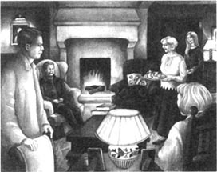
“我叫玛格丽特·亨德森，”老妇人说，“这是我的女儿基娅拉，她也有个女儿，所以我已经做外婆了。”
“我女儿已经睡了。”基娅拉微笑着说。基娅拉身材高挑，有一头金色的长发和一双蓝色的眼睛，大概35岁上下。
“你们今天走了很远的路吧？”她问道。
“是啊，”爸爸回答说，“我们现在都精疲力尽了。”
“你们的房间已经准备好了。喝过茶后我就带你们上去。”
我们喝完了茶，便跟随基娅拉上楼，来到走廊里。她在一扇门前停下来，告诉我的父母那是他们的房间。然后，她看着我说道：“你的房间在拐角处，请这边走。”
我们向右拐进另一条走廊。我的房间在走廊的尽头。
基娅拉微笑着说：“晚安，睡个好觉。”
可是那一夜我却无法安睡……
我锁好了房门，5分钟后便上床休息了。房子里很安静，但是我能听到打在窗上的雨声和窗外树木在风中摇曳的声音。我睡了一小会儿，醒了，然后又睡着了。突然，我被惊醒了。百叶窗正撞击着墙面，发出很大的声响。我看见窗户开了，长长的白色窗帘被风吹得舞动起来。我起身关上了窗户和百叶窗。此时，屋子里一片漆黑，我只能伸出双手试探着移动，想要找到床边桌上的台灯。我的左手摸到了桌子——可就在这一刻我的右臂被什么东西抓住了。
那是一只冰冷的小手。我吓得毛骨悚然，双腿战栗。
“是谁？”我叫出声来。
这时我摸到了桌上的台灯，立刻打开了灯。在床边，一个穿着长长的白色睡裙的小女孩正站在我面前。她看着我，大大的眼睛像意大利夏日的天空一样湛蓝，金色的头发披散在苍白的面孔旁，如阳光般灿烂。
“多漂亮的孩子啊！”我暗自感叹。
“你好，我叫阿利格拉。”她说。
她的声音甜美、轻柔，英语说得很好听。但是她不会发字母“r”的音。
“你是从窗户进来的吗？”我问道。

她没有回答，而是反问我：“你叫什么名字？”
“阿德里安。”
“我5岁零3个月，”她说，“你多大？”
“16岁。你是怎么进来的？”
“不要生我的气，阿德里安。”她说。
“我没有生你的气，别哭。再告诉我一遍你的名字好吗？”
“阿利格拉，在意大利语中是‘快乐’的意思。”
“阿利格拉，你为什么到这儿来？你想要干什么呢？”
“你能带我去找妈妈吗？”她突然问道。
我惊讶地看着她说：“可是你知道你妈妈在哪儿呀。”
“是的，但是她在很远的地方。”
“不对，阿利格拉，她就在这座房子里。”
“我想见妈妈。求求你，带我去行吗。”
“不行，阿利格拉。如果你不回到床上睡觉，她会生气的。”
“噢，不会的，妈妈以前从不生我的气，”她说，脸上露出了一丝笑容，“可爸爸有时会生气，那时我很怕他。”
那一刻我没有说话，只是不解地看着她。为什么她讲到父母的时候要说“以前”，而不是“现在”？真是个奇怪的小女孩。
“阿利格拉，现在你该回去睡觉了，”我说，“我不能带你去找妈妈。”
她望着我，蓝色的眼睛里流露出忧伤的神色。
“那你明天带我去好吗？”
“好的。”
“啊，谢谢你！”她高兴地叫起来。
“现在告诉我，你的房间在哪儿？”
“就在隔壁。”
“好，我们走吧。”
我牵起她冰冷的小手。就在这时，窗户又被吹开了，瞬时间大风夹着雨点刮了进来。我走过去关窗，可是窗帘被风吹起来罩在我的脸上，遮住了视线。当我把窗子关好后，转过身来，发现阿利格拉已经不见了。
我呆呆地站了一会，然后打开房门，来到走廊里。左侧有一扇门，我慢慢地将它打开。房间里很黑，但看得出那是一间儿童房。在窗子旁边的床上睡着一个人。
“太好了！”我心想，“她已经睡了。”我关上了门。
第二天早晨，吃过早餐，我们来到花园里。花园被青山碧树环绕着，景色优美我绕到房子的后面，想去察看我的房间和阿利格拉房间的窗户。我发现，在两扇窗之间靠墙的地方有一棵大树。
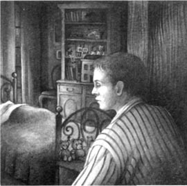
“也许她从自己房间的窗口爬到树上，又从窗户进了我的房间。”我暗自猜测。不过这么做既困难又危险，成人也许做得到，而对一个5岁的小女孩来说则有些不可思议。
我回到前面的花园时，阿利格拉的妈妈也在那儿，正和我父母聊天。
“昨晚你们房间的百叶窗开了吗？”她问，“我听到了声响。”
“没有，”我妈妈答道，“不过我们也听到了声音。”
“是我房间的百叶窗开了。”我说。
“哦，真抱歉，”基娅拉说，“那些百叶窗太旧了。但愿你在关上窗子以后睡了个安稳觉。”
“该告诉她吗？”我寻思着。然后我笑着说：“是啊，谢谢您，我睡得很好——不过是在您的女儿去过之后。”
“阿利格拉？”基娅拉非常诧异。
“是的，她昨天半夜来过我的房间。”
“是吗？嗯，我知道她有时会梦游。”
“只是……”我欲言又止，再次思量起来：“该告诉她吗？”
最终我决定隐瞒我的疑虑——昨夜门是锁着的。我知道他们不会相信我，恐怕还会嘲笑我。所以我只称赞阿利格拉是个美丽的女孩。
“是啊，”基娅拉应道，“但她却不是个快乐的孩子。”
“她的名字在意大利语中不正是‘快乐’的意思吗？”
“不错，可我从没见过其他名叫阿利格拉的意大利孩子。”
“那你为什么给她起了阿利格拉这个名字？”我妈妈问。
“不知道，只是突然就想到了，也许是想有个快乐的孩子吧。”说到这儿，基娅拉露出了苦涩的笑容。
然后她转身朝房子的方向呼喊女儿：“阿利格拉，下楼来，好吗？”
“来了！”从房子里传来喊声。
我们听见了阿利格拉下楼的声音，然后她出现了。我目不转睛地盯着她，不敢相信自己的眼睛。
2．Allegra Two
2
Allegra Two
She was pale and beautiful, like the girl in my room. But this was a different girl. This Allegra had long black hair and her eyes were brown.
'Hallo,' she said.
Was it the same voice? It was soft and sweet but — I wasn't sure!
'This is Adrian,' said Chiara. 'He says that you went into his room last night, Allegra.'
The girl looked at me in surprise.
'No, Mummy, I wasn't in his room.' She spoke English beautifully, but she couldn't say the letter 'r'!
'You see, she doesn't remember,' Chiara said to me. 'I think that she was walking in her sleep again.'
When I went to bed that night, I couldn't sleep. I was waiting for the girl and I was afraid. But after about an hour my eyes closed and I slept. I woke up suddenly when a cold little hand touched my face. The girl's voice spoke softly in my ear.
'Wake up, Adrian, wake up...'
I turned on the light. She was there; but was she real? Her skin was like milk, her blond hair was like sunlight in the room. She was wearing the long, white nightdress.
'Is she real or is this a dream?' I thought.
And I touched her face. It was cold, very cold. But it was real.
'Will you take me to Mamà now?' she asked.
I looked at the window. It was closed. Then I went to the door. It was locked. I began to feel very afraid.
'How did you get in here?' I asked.
'You weren't here so I waited for you. I was sleeping behind that curtain.'
She showed me a curtain in a corner of the room. There was another, smaller bed for a child behind it. So she was in the room before I came! But where did she come from, and who was her mother?
'Okay, I'll take you to your mother,' I said. 'Where is she?'
Suddenly the girl began to speak in Italian. 'She's at Bagno a Ripoli, near Florence.'
'But we can't go to Florence tonight!' I said. I could understand Italian, but I spoke in English.
'You must take me!' Allegra said angrily, speaking in English again. 'I want to see my Mamà tonight. I want to see her before I die.' Then she began to cry.
Die! What did she mean?
'Why do you say that?' I said in surprise. 'You're not going to die.'
'Yes, I am. I know, I know! Papà didn't like Mamà and he took me away from her. I didn't see her for a long time. I wanted to see her and she wanted to see me too. Oh, I must see her before I die!'
Again I couldn't understand why she spoke in the past. I really couldn't understand anything! Was this all a little girl's fantasy? I decided to ask her some questions.
'Who is your mother? What is her name?'
'Claire.'
Claire was the English for Chiara. I thought for a second.
'Come with me, Allegra,' I said. 'We'll go downstairs.'
I wanted to show this little girl to Chiara. Then she would know that her daughter wasn't walking in her sleep — and I would know that I wasn't dreaming! I took the girl's cold little hand but she wouldn't come.
'No, no!' she cried in Italian again. 'My dear Mamà is at Bagno a Ripoli near Florence. I want to go there.'
I said, 'Wait here, Allegra. I'll go downstairs and bring my friend. She wants to see you. Wait here.'
I found Chiara in the long room. She was reading a book in an armchair by the fire. I told her that there was a girl in my room again. She looked surprised and followed me upstairs. We went along the corridor. My door was open and we went into the room. The child wasn't there.
We looked everywhere but found nothing. The only child in the house was Chiara's daughter.
'She's sleeping in her bed,' Chiara told me. 'Perhaps you had a dream, Adrian.'
'No, it wasn't a dream! There was a girl in my room a few minutes ago. I saw her and talked to her.'
Then I told Chiara everything about the girl. When I finished, she said:
'Well, it's very strange. Who is this girl? She isn't my daughter. My Allegra has got black hair and brown eyes. And my husband didn't take her away from me. I know that he wants to take her away, but he can't. Allegra lives with me. You see, I don't love my husband any more, and so he doesn't live here with us. He's in England. But Allegra likes him a lot and I know that she wants to see him.' She was silent for a minute, then said, 'So the child in your room wants to see her mother, and Allegra wants to see her father. It's strange, isn't it? I don't understand it.'
Next day I went for a walk with Allegra Henderson. The big black dog came with us. We walked down a hill and came to a little river with a bridge. We stood on the bridge while Allegra dropped stones into the water and the dog tried to find them.
'Do you speak Italian, Allegra?' I asked.
'Oh yes! Listen.' And she spoke fast in Italian.
'Did you learn it at school?'
'Yes. It's a convent school and the teachers are Italian nuns. Look, Nero has got a stone in his mouth! Isn't he clever? Come here, Nero!'
'Allegra, do you know a place called Bagno a Ripoli?'
'No, I don't. Oh, don't shake the water over us, Nero — you bad boy!'
'Do you know anybody called Claire?'
'Yes, of course! That's Mummy's name in English.'
Allegra laughed. But she didn't laugh when I asked:
'Where's your Daddy, Allegra?'
She didn't answer me.
'You're a bad boy, Nero!' she said angrily. 'Give me that stone!'
I asked her the question again. This time she answered.
'Mummy says he's in England.'
Was she sad or angry? I didn't know.
'Do you want to see him?'
'Yes,' she said. And I saw that she was unhappy. She didn't want to talk about it.
'Why can't you see him?' I asked.
'Because Mummy says that he wants to take me away from her.'
'Would you like to go away with your Daddy?'
She looked at me for a second; then suddenly she began to cry.
'I want to see my Daddy!' she cried, sad and angry at the same time. 'I want to see him before I die! Why doesn't he come?'
And then she ran away. She ran fast up the hill and Nero ran behind her.
My parents liked the villa so we stayed there for a week. But I wanted to go. I was afraid. Every night the blond Allegra came to my room in her long white nightdress, and asked me to take her to her Mamà. When I said no, she was always very angry with me.
And every day I talked and played with the dark-haired Allegra, Chiara's daughter. I liked her a lot and she liked me. We were good friends. But she was like two different people. Sometimes she spoke to me angrily, like the other Allegra in the night. At other times she was a happy, sweet little girl of five again. I often asked her why she thought that she was going to die. She always answered with the same words: 'I know, I know.'
During that week's holiday I began to feel love for Allegra Henderson. But there was the other Allegra who came at night. Who was she? I didn't believe in ghosts, but I was beginning to think that she was a ghost.
The day before we left, I wrote some notes:
ALLEGRA HENDERSON
— 5 years old. Tall, black hair, brown eyes, pale.
— Speaks English and Italian,but can't say 'r'.
— Mother's name Chiara. Calls her 'Mummy'.
— Wants to see her father, who lives in England.
— Thinks she is going to die.
ALLEGRA THE GHOST
— 5 years old. Tall, blond hair, blue eyes, pale.
— Speaks English and Italian, but can't say 'r'.
— Mother's name Claire and lives at Bagno a Ripoli near Florence. Calls her 'Mamà'.
— Wants to see her mother, but her father says no.
— Thinks she is going to die.
I read these notes lots of times, but they didn't help me. Then I saw that I didn't know anything about the ghost Allegra's father. So I decided to ask her that night, which was our last night at the villa. I didn't sleep much that night; I waited and waited. But she didn't come. No, she didn't come and I was angry! I felt sure that her father was important.
Next morning we said goodbye to the Hendersons. When I said goodbye to Allegra, I felt sad. She was sad too, and she gave me a kiss.
'I hope that one day you will see your Daddy,' I said to her. 'Then you'll be happy.'
'Oh no,' she answered in a strange voice. 'Papà is dead now. He was a famous lord and he took me away from my Mamà. But he's dead now.'
We were all very surprised.
'What are you saying, Allegra?' Chiara said. 'Your father isn't a lord and he isn't dead! What a strange fantasy!'
But Allegra only smiled; a sad smile. And that was the last time I saw her.
real adj. actually existing and not just imagined 实际存在的
dream n. a series of thoughts, images, and feelings that you experience when you are asleep 梦
die v. (of people) to stop living （人）死亡
fantasy n. an idea or belief that is based only on imagination, not on real facts 幻想
husband n. the man that a woman is married to 丈夫
drop v. to fall or let fall （使）落下
convent school a school for girls that is run by Roman Catholic nuns 女修道院学校
ghost n. the spirit of a dead person that some people think they can feel or see in a place 鬼，幽灵
note n. something that is written down to remind you of something you need to do, say, or remember 笔记，记录
important adj. which matters a lot 重要的
famous adj. known about and talked about by many people in many places 出名的
lord n. a man who has a rank in the aristocracy, especially in Britain, or his title （尤指英国的）贵族（头衔）
阿利格拉二
2． 阿利格拉二
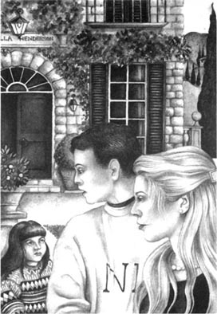
她很漂亮，肤色有些苍白，很像去我房间的女孩，但却不是同一个人。眼前的这个阿利格拉长着黑色的长发，眼睛是棕色的。
“你们好。”她问候道。
这是一样的声音吗？同样的轻柔、甜美，可是——我无法确定！
“这是阿德里安，”基娅拉说，“阿利格拉，他说你昨晚去过他的房间。”
小女孩吃惊地看着我。
“没有，妈妈，我没去过他的房间。”她英语说得很好听，但不会说字母“r”！
“瞧，她不记得了，”基娅拉对我说，“我想她一定是又梦游了。”
那天晚上上床以后，我无法入睡，在恐惧之中等待着那个女孩的出现。可是过了一个小时左右，我便支撑不住，睡着了。突然，一只冰冷的小手摸到了我的脸，我惊醒了。耳边响起小女孩轻声的呼唤。
“醒醒，阿德里安，醒醒……”
我打开灯，她就站在那儿，可这是真的吗？她的皮肤看上去像牛奶般光滑、白皙，金发如同射入房间里的一道阳光。她依然穿着长长的白色睡裙。
“这一切是真的？还是做梦？”我思忖着。
我用手摸她的脸，冰冷冰冷的，但却是真切的。
“现在你带我去找妈妈好吗？”她问道。我看了看窗户，是关着的。然后我去检查房门，是锁着的。我开始感到害怕了。
“你是怎么进来的？”我问她。
“你不在房间里，我只好在这儿等你，我就睡在那个帘子后面。”
她指给我看房间角落里的一道帘子，那后面放着一张孩子的小床。原来我进来之前她就在房间里！可是她从哪儿来？她的妈妈又是谁呢？
“好吧，我带你去找妈妈，”我说，“她在哪儿？”
这时她忽然改用意大利语说：“她在佛罗伦萨附近的巴尼奥阿里波。”
“今晚我们可没法去佛罗伦萨！”我说。我能听懂意大利语，但还是用英语回答她。
“你一定要带我去！”阿利格拉用英语气呼呼地说，“今晚我就要见到妈妈。我要在死之前见到她。”说完，她哭了起来。
死！她是什么意思？
“你为什么这么说？”我吃惊地问，“你不会死的。”
“不，我会死，我知道，我知道的！爸爸从前不喜欢妈妈，还把我从妈妈身边带走。很长时间我都见不到妈妈。那时我想见妈妈，妈妈也想见我。哦，我一定要在死以前见到她！”
我又产生了疑虑，为什么她总是谈论“从前”呢？我真是一点儿都不明白。这些会不会只是一个小女孩的幻想呢？我决定向她问问清楚。
“你妈妈是谁？她叫什么名字？”
“克莱尔。”
克莱尔正是基娅拉的英文说法。我想了一下。
“跟我来，阿利格拉，”我说，“我们下楼去。”
我想带这个小女孩去见基娅拉，那样她就会知道她的女儿不是在梦游，而我也可以证明自己不是在做梦了！我拉起女孩冰冷的小手，可是她不愿意去。
“不，不要！”她又用意大利语喊道，“我妈妈是在佛罗伦萨附近的巴尼奥阿里波，我要去那儿。”
我说：“在这儿等我，阿利格拉。我去楼下找我的朋友，她想见你。等着我。”
在那间长长的屋子里我找到了基娅拉。她正坐在壁炉旁的椅子上看书。我告诉她有个女孩又去了我的房间。她很惊讶，便跟我一起上楼来。我们穿过走廊，我的房门开着，我们走进房间，那女孩已经不在了。
我们四处察看，但都没有找到那个女孩。这座房子里唯一的孩子就是基娅拉的女儿。
“她正在自己的床上睡觉，”基娅拉对我说，“阿德里安，也许你做了个梦。”
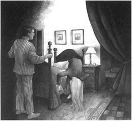
“不，不是梦！就在几分钟前有个女孩在我房间里。我看到她了，还和她说话了。”
然后，我把那女孩的事都告诉了基娅拉。听完以后，她说：
“啊，这的确令人费解。那个女孩是谁呢？她不是我女儿。我的女儿阿利格拉是黑色头发、棕色眼睛，我丈夫也没有把她从我身边带走。我知道他想那么做，但是他不能。阿利格拉和我一起生活。你瞧，我丈夫和我不再相爱，所以他不和我们住在一起，他在英国。但是阿利格拉很爱他，我知道她希望见到他。”她沉默了一会儿，然后接着说：“来你房间的女孩想见妈妈，而阿利格拉想见爸爸。很奇怪，不是吗？我想不明白。”
第二天，我同阿利格拉·亨德森一起去散步，身后跟着那只大黑狗。我们走下一座小山，来到一条小河旁，河上有一座桥。站在桥上，阿利格拉向水中丢石子，让她的狗去找。
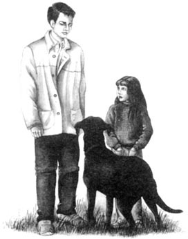
“阿利格拉，你会说意大利语吗？”我问。
“会啊，你听。”接着她就快速地讲起意大利语来。
“你是在学校学的吗？”
“是的，是一所女修道院学校，老师都是意大利修女。瞧，尼罗嘴里叼着块石头！它很聪明吧？过来，尼罗！”
“阿利格拉，你知道一个叫巴尼奥阿里波的地方吗？”
“不知道。哦，别把水甩到我们身上，尼罗，你这个坏家伙！”
“你认识叫克莱尔的人吗？”
“当然啦！那是妈妈的英文名字。”
阿利格拉笑起来，但是当听到下一个问题时她的笑容消失了。
“你爸爸在哪儿，阿利格拉？”
她没有回答。
“你是个坏家伙，尼罗！”她生气地说，“给我那块石头！”
我又问了一遍，这次她回答了。
“妈妈说他在英国。”
她感到忧伤还是生气？我猜不出来。
“你想见他吗？”
“是的。”她说。我看得出她很不开心，不愿意谈这个。
“你为什么不能见他呢？”我问。
“因为妈妈说他想把我从妈妈身边带走。”
“你愿意跟爸爸走吗？”
她盯着我，然后突然哭了起来。
“我想见爸爸！”她喊道，既悲伤又愤怒。“我想在我死之前见到他！他为什么不来呢？”
说完她就跑开了。她飞快地向山上跑去，尼罗紧跟在她后面。
我的父母很喜欢这座乡间别墅，所以我们在那儿住了一周。但是我盼着离开，因为我害怕。每天夜里那个金发的阿利格拉都会出现在我房里，依旧穿着她的白色长睡裙，央求我带她去找妈妈。当我拒绝时，她就会变得很生气。
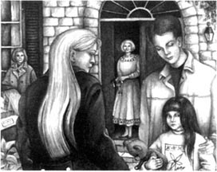
而在白天，我总是和黑发的阿利格拉——基娅拉的女儿——一同聊天、玩耍。我很喜欢她，她也喜欢我。我们成了好朋友。但是，阿利格拉表现得就像两个截然不同的人一样。有时她会带着怒气跟我说话，就像在夜里现身的那个阿利格拉；有时她又重新成为一个快乐可爱的5岁女孩。我常常问她为什么认为自己会死，她每次的回答都是相同的：“我知道，我就是知道。”
在那一周的时间里，我同阿利格拉·亨德森的感情愈来愈深，同时也为另外那个在夜里出现的阿利格拉所困扰。她到底是谁呢？我不相信有幽灵，却禁不住开始觉得她就是个幽灵。
在离开的前一天，我做了些记录：
阿利格拉·亨德森：
·5岁，高个儿，黑发，棕色的眼睛，皮肤苍白。
·会说英语和意大利语，但是不会发字母“r”的音。
·妈妈的名字是基娅拉，称妈妈为“Mummy”。
·爸爸住在英国，想要见爸爸。
·认为自己要死了。
幽灵阿利格拉：
·5岁，高个儿，金发，蓝色的眼睛，皮肤苍白。
·会说英语和意大利语，但是不会发字母“r”的音。
·妈妈的名字是克莱尔，住在佛罗伦萨附近的巴尼奥阿里波，称妈妈为“Mamà”。
·想要见妈妈，但爸爸不允许。
·认为自己要死了。
我反复地看这些笔记，却无法从中理出头绪。不过，我发现自己对幽灵阿利格拉的爸爸一无所知，于是决定当晚问问她。这是我们在别墅的最后一夜，我几乎没怎么合眼，一直等着她。但是她没有来。是的，她没有出现，这让我非常恼火。我确信她的爸爸是个关键人物。
第二天上午，我们向亨德森一家辞行。同阿利格拉告别时，我有些难过，她也很伤心，还亲了我一下。
“希望有一天你能见到爸爸，”我对她说，“那样你就会开心了。”
“哦，不，”她说，声音很奇怪，“爸爸已经死了。过去他是很有名的勋爵，他把我从妈妈身边带走。但现在他已经死了。”
我们都惊呆了。
“你在说什么啊，阿利格拉？”基娅拉说，“你爸爸不是勋爵，他也没有死！真是胡言乱语！”
但是，阿利格拉没作声，只是笑了，是忧伤的笑。那是我最后一次见到她。
3．Allegra Three
3
Allegra Three
In England I went back to school and my studies, but I didn't forget Allegra. I wrote letters to her and sent some small presents. She didn't answer my letters but I said to myself, 'Well, she's only five. Perhaps she can't write letters yet.'
Then a year after our holiday in Italy a letter arrived from Margaret Henderson. First she thanked me for my letters and presents. Then she wrote:
I'm sorry that we didn't write to you, but it has been a very bad year for us. It is difficult for me to write now, but today is April 21st and I want to tell you that something terrible happened on the same day last year. Chiara and I are still very sad, and Chiara has been ill. She doesn't eat much and she doesn't want to speak to anybody. Now I'll tell you why. A week after your holiday our little Allegra got a fever. A few days later the fever was worse and we called the doctor. He said that he wasn't sure what the fever was. 'Perhaps she drank some bad water or ate food that was bad,' he told us. He gave her some medicine and she was better. But then the fever returned very quickly. We couldn't find the doctor and when he arrived, it was too late. Our dear little Allegra died on April 21st a year ago. Oh, it's like a terrible dream! Our darling child was only five years and three months old. Now she has gone and she will never come back to us!
When I read this, I was shocked. Allegra dead! I felt very sad and I began to cry. For a long time I just couldn't believe it. I remembered her face, her voice, and her child's talk. I remembered our games and our conversations. Allegra came back to me like a ghost and I was very unhappy.
When I was eighteen, I went to university to study Italian, but I often remembered Allegra and that strange week at the Villa Henderson. How could I forget it? And I often thought about Allegra's strange words: 'I want to see my Daddy before I die.' How did she know that she was going to die? And then there was the ghost Allegra in my room, saying, 'I want to see my Mamà before I die.' What did it all mean? I wanted to find the answer to this mystery. But how?
In spring I went to Italy for my studies and I stayed in Florence with an Italian family. They had a little daughter. When they told me her name, I couldn't believe my ears.
'We wanted a different name,' the mother told me, 'a name that you don't often find in Italy. Allegra came to me suddenly. It's a beautiful name and we hoped that she would be a happy child. But she isn't happy. She's a strange girl.'
I looked at the child. She was tall; her face was pale and beautiful. She had long brown hair and brown eyes.
'How old is she?' I asked.
'She's five.'
'Five? Are you sure — I mean, is she?' I said, stupidly.
'Yes, five.' The mother looked at me strangely.
'Can I ask you when she was five? I mean, when is her birthday?'
The mother looked surprised. 'In January. Why?'
'But please tell me the exact day. You see, I'd like to buy her a present next year.'
Now the mother was smiling. 'She was born on January 21st.'
When I went to my room that night, I was afraid and I didn't go to bed. I was thinking about Allegra Henderson. She died on April 21st when she was five years and three months old. So she was born on January 21st too! Was it possible that this Italian Allegra had the same name, the same birthday, the same age? I couldn't sleep so I tried to read a book about some English poets in Italy. But I couldn't. I was waiting, waiting...
She came at midnight. I looked at my watch and then she was there in a dark corner of the room. A beautiful, blond child, her skin like milk, her eyes like the blue of an Italian sky. She wore a long white nightdress. Allegra.
'Will you take me to my Mamà?' she asked in her beautiful English. 'She's at Bagno a Ripoli. It isn't far from here.'
I was very afraid now and I shouted, 'Go away! Go away!'
But she came and stood by my armchair.
'I want to see Mamà before I die. Take me!' she said angrily.
I ran out of that room very fast.
Next morning I decided to go to Bagno a Ripoli. I drove there in my small Fiat 500. There were only a few houses, and a small church called Santa Maria dell'Antella. I went into the church but there was nothing special about it. Then I walked around the small cemetery behind it. But I didn't see anything different so I decided to go back to Florence. When I was going out of the cemetery, I saw a tombstone with some English words on it. I stopped and read:
Here lies Claire Clairmont
Died in Florence
March 19th 1879
Aged 81
The name Claire again! The name of the ghost Allegra's mother! I was very surprised but I still didn't understand anything.
In Florence that afternoon I decided to go to a bar and read the book about the English poets. And while I was reading about Byron and Shelley, I began to understand the mystery of Allegra.
terrible adj. making you feel afraid or shocked 可怕的，骇人的
fever n. an illness or a medical condition in which you have a very high temperature 发烧
medicine n. a substance used for treating illness, especially a liquid you drink 药
shocked adj. feeling surprised and upset by something very unexpected and unpleasant 震惊的
mystery n. something that is impossible to understand or explain or about which little is known 神秘的事物
exact adj. correct in every detail 确切的
church n. a building where Christians go to worship 教堂
special adj. not ordinary or usual 特别的
cemetery n. a piece of land，usually not belonging to a church，in which dead people are buried （不属于教会的）公墓
tombstone n. a stone that is put on a grave and shows the dead person's name, dates of birth and death etc. 墓碑
bar n. a place where alcoholic drinks are served 酒吧
阿利格拉三
3． 阿利格拉三
回到英国，我继续上学读书，但却没有忘记阿利格拉。我给她写信，还寄去一些小礼物。她没有回过信，不过我想：她才只有5岁，也许还不会写信呢。
当我们的意大利之行结束一年以后，我收到了玛格丽特·亨德森的来信。她先在信中对我寄去的信和礼物表示感谢，然后写道：
很抱歉一直没有给你写信，因为过去的一年对我们来说真是痛苦不堪。到现在我还是难以动笔，但今天是4月21日，我想告诉你去年的今天发生了可怕的事情。基娅拉和我现在仍然很伤心，而且基娅拉一直病着。她吃不下东西，也不愿和任何人讲话。现在我就把原因告诉你。你们走后才一周，小阿利格拉就发烧了。没几天，她的病加重了，我们找来了医生。医生也不能确定病因，他告诉我们：“也许她喝了不干净的水，或是吃了变质的食物。”他给阿利格拉开了些药，而后她的病情有了好转。可是很快阿利格拉就又发烧了。我们找不到医生，当他赶到时，已经太晚了。我们深爱的小阿利格拉就在一年前的4月21日去世了。这真像是一场噩梦啊！我们亲爱的孩子只有5岁零3个月，可是她走了，再也不会回到我们身边了！
读了这封信，我震惊不已。阿利格拉死了！我伤心地哭了。很长时间我都无法相信这是真的。我还记得她的面孔、声音和充满孩子气的讲话，记得我们在一起的游戏和交谈。对阿利格拉的记忆不断涌现，像幽灵一般挥之不去，让我陷入了悲伤。
18岁那年，我上了大学，学习意大利语。我依旧时常想起阿利格拉和在亨德森庄园度过的那不寻常的一周。我无法忘记那一切！阿利格拉那些难以捉摸的话经常浮现在我的脑海里：“我想在死之前见到爸爸。”她怎么知道自己要死呢？还有那个出现在我房间里的幽灵阿利格拉，她总是说：“我要在死之前见到妈妈。”这些到底都意味着什么呢？我希望解开这个谜团，可是我该怎么做呢？
春季学期我去意大利学习，住在佛罗伦萨的一个意大利家庭里。他们有一个小女儿，当他们告诉我她的名字时，我简直不敢相信自己的耳朵。
“当时我们想起个与众不同的名字，”她妈妈告诉我，“一个在意大利不常见的名字。然后我突然想到了阿利格拉。这名字很美，我们希望女儿会是个快乐的孩子。但是她并不快乐，她是个很怪的孩子。”
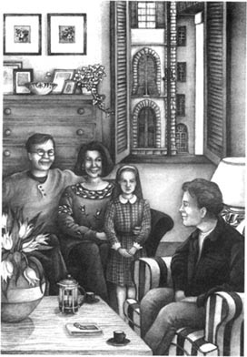
我看着那女孩：高个儿；面孔苍白，但很漂亮；长发和眼睛都是棕色的。
“她几岁了？”我问。
“5岁。”
“5岁？你确定吗？——我是说，真的吗？”我傻傻地问道。
“没错，是5岁。”这位妈妈不解地看着我。
“能告诉我她什么时候满5周岁吗？我是说，她的生日是什么时候？”
妈妈感到很惊讶。“是1月，怎么了？”
“请告诉我确切的日期。因为……明年我想为她买生日礼物。”
这时，女孩的妈妈露出了笑容。“她是1月21日出生的。”
那天晚上回到房间后，我没有睡觉，心中忐忑不安。我想到了阿利格拉·亨德森。她是4月21日去世的，那时她5岁零3个月。那么她的生日也是1月21日！难道这个叫阿利格拉的意大利女孩跟她同名、同岁、同一天出生吗？我无法入睡，于是翻看起一本有关在意大利的英国诗人的书。但是我看不进去。我其实是在等待着……
她在午夜时分出现了。我看了看手表，而她忽然出现在房间黑暗的角落里。一个美丽的金发女孩，皮肤如牛奶般润白，眼睛像意大利的天空一样湛蓝，穿着长长的白色睡裙。是阿利格拉。
“你能带我去妈妈那儿吗？”她用美丽的英语问道，“她在巴尼奥阿里波，离这儿不远。”
此时我害怕极了，朝她喊道：“走开！快走开！”
但是她走了过来，站在我的扶手椅旁。
“我要在死之前见到妈妈。带我去吧！”她生气地说。
我拔腿逃离了那个房间。
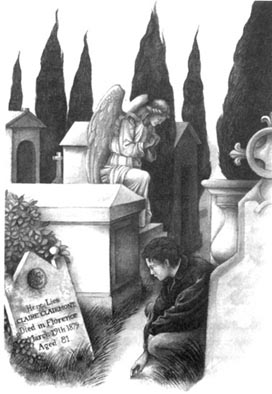
第二天上午，我决定开着自己那辆小菲亚特500去巴尼奥阿里波。那里只有寥寥几座房屋和一座叫圣玛丽亚德尔安蒂拉的小教堂。我进了教堂，但是没有发现任何特别之处。然后我绕到了教堂后面一块不大的墓地，仍旧一无所获。于是，我决定返回佛罗伦萨。就在即将走出墓地时，我看到了一块刻着英文的墓碑。我停了下来，墓碑上写着：
克莱尔·克莱尔蒙特长眠于此
1879年3月19日
卒于佛罗伦萨
享年81岁
又是克莱尔！幽灵阿利格拉妈妈的名字！我感到很吃惊，却仍然不明真相。
回到佛罗伦萨的那个下午，我决定去酒吧，在那里读读那本关于英国诗人的书。当我读到拜伦和雪莱时，渐渐明白了阿利格拉的秘密。
4．Lord Byron's Daughter
4
Lord Byron's Daughter
This is what I read:
On January 21st 1817 Claire Clairmont, nineteen years old, had a baby daughter in a town called Bath in England. The baby's father was the poet Lord Byron, but he was not Claire's husband. They were lovers for a while but then Byron went to Italy. He did not love Claire and he did not want to be with her. So Claire lived with Byron's friends — the poet Shelley, his wife Mary, and their two children. Claire and Mary were half-sisters; they had the same father but different mothers. Shelley liked children very much and he felt a strong love for Claire's baby. He hoped that his friend Byron would help Claire and her daughter. From Bath he wrote to him:
Claire has a very beautiful girl. Her hair is fair and her eyes are blue... Claire calls her Alba.
Byron wanted to see his baby daughter and he asked Shelley to bring her to Italy. Shelley wanted to live in Italy too, so he and his family, and Claire and her baby, all travelled there. The baby was a year old and now she was called Allegra because Byron liked the name.
In Italy Claire decided to give Allegra to Byron because she thought that the daughter of an English lord would have a good future. Shelley said to her: 'No, don't do it, Claire, or you will never see your daughter again.' But Byron was rich and Claire thought that Allegra would have a better life with him. Of course, she did not want to give Allegra to Byron, and when she sent the child to him in Venice, she was very unhappy. In a letter to a friend she wrote:
In the spring of 1818 I sent my little darling to her father. She was the only thing that I loved in the world.
It was a terrible mistake. Allegra lived with her father in a big house called the Palazzo Mocenigo. It was full of strange animals, and even stranger people. After a while Lord Byron understood that it was not a good home for a child. So he gave Allegra to an English family in Venice, and in August Claire saw her there. Then Byron said that Claire and her baby and Shelley's family could stay at his villa near a town called Este. For two months Claire was happy there with Allegra. But Byron also said that she must bring Allegra to him in Venice in the autumn. So in October Allegra went back to her father, and Claire never saw her again.
Allegra stayed in Venice for eight months with different families. Then Byron took her to the city of Bologna. He wrote to Shelley:
She is like me. She has white skin. Her voice is soft and she can't say the letter 'r'.
For many months he sent no news to Claire about her daughter. Then she heard that Allegra was with her father in a town called Ravenna. She wrote to him, 'I want to see my daughter — please!' But he said no. Claire wrote a lot of letters like this to Byron, but he did not answer them. She was very unhappy.
When Allegra was four years old, Byron sent her to a convent school near Ravenna. The nuns were kind and loved her very much. But the convent was strange to her. The walls were white and cold, the rooms were empty, and sometimes she was cold because there was no fire. Every day she did the same things at the same time. This quiet life was very different from her life with Byron.
Claire was now very angry. She did not like convent schools, and she was sure that Allegra was always cold and lonely. She wrote an angry letter to Byron: 'My child must be with one of her parents,' she said. He did not answer the letter. He thought that the convent was good for Allegra, and he told the nuns that Claire must never visit the child. They must lock the doors to stop her. But he said that Shelley could see Allegra because he was his friend. So one day Shelley went to visit Allegra at the convent. He wrote in his diary:
She is tall and pale. But her eyes are very blue, and she has a lot of blond hair. She is beautiful and very different from the other children. I ran and played with her in the garden. She is very light and fast. I gave her some sweets and I asked her, 'What shall I say to your Mamà?' She answered in Italian, 'Tell her to send me a kiss and a beautiful dress.' Then I asked her, 'What shall I say to your Papà?' And she answered, 'Tell him to visit me and to bring Mamà with him.'
But Papà did not visit her and Mamà did not come.
On June 6th 1821 Claire dreamt that Allegra was ill. She thought that her daughter was going to die and she would never see her again. 'Take her away from the convent,' she wrote to Byron. But he said no. Of course, Claire wanted to go to the convent and take Allegra away, but this was very difficult. Byron was a rich and famous lord and the people in the convent did what he wanted. They locked the doors.
And then Allegra got a fever. The doctor came and gave her some medicine. For a while she was better and the nuns hoped that she would live. But she died on April 21st 1822. She was five years and three months old.
Shelley was afraid to tell Claire that Allegra was dead. He thought that she would try to kill herself. But one evening Shelley, Mary, and some friends were talking about Allegra when Claire came into the room. At once everybody stopped talking, and she knew.
'Allegra's dead, isn't she?' she said.
So Shelley told her the sad story. She was very unhappy and wanted to die. Shelley was also unhappy. He loved Allegra like a daughter and he could not forget her. Two weeks after Allegra died, he was with one of his friends on the balcony of a house by the sea. Suddenly he saw a child with long, fair hair and very blue eyes. She was coming out of the sea and she was smiling at him. In the moonlight he saw that she wanted to come to him.
'Look, there it is!' he said to his friend. 'Can you see her? Look — there!'
But his friend saw nothing. It was Allegra's ghost. And fifty years after Allegra died, Claire wrote to a friend:
I can never forget my darling child. But did she really die? Byron and Shelley said that she died, but I have heard that she is alive. Some people say that they have seen her. I am sure that she is alive.
Claire died in 1879 when she was eighty-one years old. Her tombstone is in the cemetery of Santa Maria dell'Antella at Bagno a Ripoli.
half-sister n. a sister who is the daughter of only one of your parents 同父异母姐妹
fair adj. (having hair that is) light in colour （头发）金色的
future n. the time after the present 未来
mistake n. something unwise or stupid that someone does, which they regret doing afterwards 错误
empty adj. containing nothing 空的
lonely adj. unhappy because you are alone and feel that you do not have anyone to talk to 孤独的，寂寞的
diary n. a book in which you write down the things that happen to you each day 日记
sweet n. a small piece of sweet food made of sugar or chocolate 糖果
balcony n. a raised flat surface which is built out from the upstairs wall of a building 阳台
alive adj. still living and not dead 活（着）的
拜伦勋爵的女儿
4． 拜伦勋爵的女儿
以下是我所读到的：
1817年1月21日，19岁的克莱尔·克莱尔蒙特在英格兰巴斯市生下一个女孩。诗人拜伦勋爵是孩子的父亲，但他们并没有结婚，只是做过一段时间的情人，后来拜伦去了意大利。他不爱克莱尔，也不想和她生活在一起。克莱尔只好找到拜伦的朋友，诗人雪莱，与雪莱夫妇和他们的两个孩子住在一起。雪莱的夫人玛丽与克莱尔是同父异母的姐妹。雪莱喜欢孩子，对克莱尔的女儿尤其喜爱，他希望拜伦能够帮助克莱尔母女，于是就从巴斯给拜伦写信：
克莱尔生了个女儿，金发碧眼，非常漂亮，……克莱尔给她起名叫阿尔巴。
拜伦想见自己的女儿，就请雪莱带她来意大利。雪莱也想到意大利生活，便带着家人和克莱尔母女一同前往。这时小女孩1岁，并改名为阿利格拉，因为拜伦喜欢这个名字。
在意大利，克莱尔决定将阿利格拉交给拜伦抚养，因为她觉得作为英国勋爵的女儿会有更好的前途。雪莱对她说：“不要那么做，克莱尔，不然你就再也见不到自己的女儿了。”但是拜伦很富有，克莱尔觉得阿利格拉和他在一起会生活得更好。当然，克莱尔并非真的想这样做，在威尼斯把孩子交给拜伦时，她非常伤心。在给朋友的信中，她写道：
1818年春天，我把宝贝女儿交给了她的父亲。她是这世上我唯一爱的人。
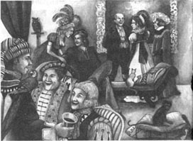
克莱尔做了个极其错误的决定。阿利格拉同父亲住在一座叫莫契尼格宫的豪宅里。那儿总是聚集着稀奇古怪的人和动物。过了一段时间，拜伦勋爵发现这个居所并不适合孩子，于是将阿利格拉送到威尼斯的一户英国人家里。8月份，克莱尔在那里见到了女儿。后来拜伦允许克莱尔母女和雪莱一家住在他在埃斯特镇附近的别墅里。在那儿，克莱尔和女儿阿利格拉度过了愉快的两个月。但是拜伦说克莱尔必须在秋天把女儿带回威尼斯，交给他。所以，到了10月份，阿利格拉又回到了父亲身边，而克莱尔从此再也没有见过她。
在威尼斯，阿利格拉生活了8个月，先后被寄养在好几个家庭里。而后，拜伦带她去了波洛尼亚。在给雪莱的信中，他写道：
她很像我，皮肤白皙，声音轻柔，但是不会发字母“r”的音。
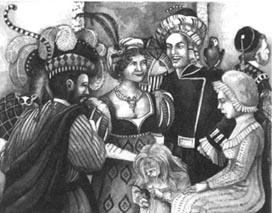
接下来的数月里，拜伦没有告诉克莱尔任何有关女儿的消息。后来，克莱尔听说阿利格拉和父亲在一个叫拉文纳的城里，于是写信求拜伦：“请让我见见女儿！”但是被拒绝了。克莱尔给拜伦写了很多类似的信，但他都没有回复。这让她很伤心。
在阿利格拉4岁时，拜伦把她送到了拉文纳附近的一所修道院学校。修女们很和善，也很喜欢阿利格拉，但修道院对她来说是个陌生的地方。墙壁是白色的，冷漠而生硬，房间里空空荡荡，没有壁炉，有时她会觉得冷。每天，阿利格拉都要在同样的时间做同样的事，这种安静的生活和她跟拜伦在一起时截然不同。
克莱尔对此非常不满。她不喜欢修道院学校，而且深信阿利格拉在那里会感到孤独、寒冷。她气愤地给拜伦写信，说：“我的女儿必须跟我们之中的一人生活在一起。”拜伦没有回信。他认为修道院学校对阿利格拉有好处，还告诉那儿的修女绝对不能允许克莱尔去看望女儿，要将其拒之门外。但是他说雪莱可以见阿利格拉，因为他们是朋友。于是，有一天雪莱去修道院看望了阿利格拉。他在日记中写道：
她个子很高，面色苍白，长着蓝色的眼睛和一头浓密的金发，是个漂亮而又与众不同的孩子。我陪她在花园里追逐玩耍，她跑起来轻快敏捷。我送给她一些糖果，又问她：“你想要我跟你妈妈说什么？”她用意大利语回答：“告诉她送给我一个吻和一条漂亮的裙子。”然后我问：“你想跟爸爸说什么？”她说：“让他带着妈妈来看我。”
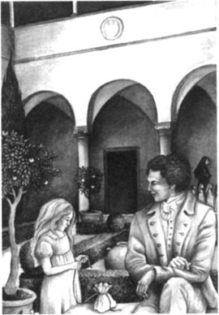
但是爸爸和妈妈都没有去看她。
1821年6月6日，克莱尔梦到阿利格拉病了。她猜想女儿快死了，自己将再也见不到她了。“带孩子离开修道院，”她写信央求拜伦，但被拒绝了。克莱尔当然希望自己能去修道院把女儿接走，可是这么做很困难。拜伦是位富有且声名显赫的勋爵，修道院的人顺从他的意愿，锁住大门。
在那之后阿利格拉发烧了。医生来看过，并开了药。曾有一段时间她的病情有所好转，修女们以为她会活下来。但是1822年4月21日，她去世了，那一天刚好5岁零3个月。
雪莱不敢把阿利格拉去世的消息告诉克莱尔，担心她会轻生。但是，一天晚上，正在雪莱、玛丽和几个朋友谈论阿利格拉时，克莱尔走进了房间，大家突然止住了谈话，克莱尔意识到了。
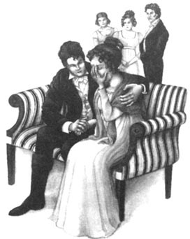
“阿利格拉不在了，是不是？”她问。
雪莱只得把这个不幸的消息告诉她。克莱尔非常伤心，甚至想要结束生命。雪莱也很难过，他像父亲一样疼爱阿利格拉，无法忘记她。阿利格拉去世两周后的一天，雪莱和一个朋友在一处海边住所的阳台上，突然他看见个金发碧眼的女孩从大海里走出来，向他微笑着。借着月光雪莱看见她正要朝自己走来。
“快看那边！”他对朋友说，“看见她了吗？就在那儿！”
但是他的朋友什么都没看见。那是阿利格拉的幽灵。
在阿利格拉死去50年以后，克莱尔在寄给朋友的信中写道：
我永远都无法忘记我亲爱的女儿。可是她真的死了吗？拜伦和雪莱说她死了，但我听说她还活着。有人说见过她。我相信她还活着。
1879年，克莱尔在81岁时去世了，墓碑安放在巴尼奥阿里波的圣玛丽亚德尔安蒂拉墓地。
5．Bagno a Ripoli
5
Bagno a Ripoli
After I read this strange, sad story, I understood the mystery of Allegra. Was she still alive? No. But her ghost was still in the world. The little girl in my room was the ghost of Claire Clairmont's Allegra. She was unhappy and she couldn't rest because she wanted to be with her mother. But she couldn't find her. She knew that her mother was at Bagno a Ripoli, but she didn't know how to get there. So her unhappy ghost lived and waited in the body of Allegra Henderson, Chiara's daughter. At night it left Allegra's body and came to my room for help. Then poor Allegra died of fever, just like Claire's Allegra. But the ghost couldn't rest; it had to find another child's body.
'Who is the child?' I asked myself.
'Who is the next Allegra — Allegra Three?'
But I already knew the answer. My Italian family in Florence had a little daughter. Her name was Allegra, and she would be five years and three months on April 21st.
It was now the evening of April 20th.
I left the bar quickly and ran back to my family's house. When I arrived, the mother was crying.
'Allegra is in hospital,' she told me. 'She's got a bad fever and the doctors aren't sure what it is. Oh, I hope it isn't dangerous! I hope she'll get better soon!'
'She'll be all right,' I said. 'She'll get better.'
But that night in my room I said to myself, 'Oh, please — no, no!'
I walked round and round the room and I thought of my dear friend Allegra Henderson. I was afraid that Allegra Three was going to die the next day. But what could I do about it?
'No! This Allegra must not die!' I said angrily.
Then, suddenly, I knew what to do. I waited. Ten o'clock, eleven o'clock, midnight. 'Please, please, come!' I said.
I looked at my watch. Twelve fifteen.
'Will she come, will she come?' I said again and again.
And then she was there: the ghost of Lord Byron's daughter! Pale, beautiful, with big blue eyes and hair like gold. She was smiling at me.
'Are you going to take me to Mamà?'
'Yes, Allegra. We're going to Bagno a Ripoli. But we must hurry. Come on, let's go!'
She laughed happily. 'Oh, thank you! You're so kind!'
I took her cold little hand. We went out of the house and got into my car. I drove very fast through the night.
'Oh, I'm going to see my dear Mamà!' Allegra said. 'I'll be with her after all these years. We'll be so happy! I loved her and she loved me. But Papà took me away from her and he sent me to a convent school. I didn't like it there. It was so cold and quiet! Mamà didn't come and Papà didn't come. Why didn't they come?'
But then she laughed and began to sing an Italian song.
When we arrived at Bagno a Ripoli, she jumped out of the car and looked around.
'Where is Mamà?' she cried.
'Follow me,' I said.
We went into the cemetery and I took her to Claire Clairmont's tombstone.
'She's here,' I said. 'Your Mamà is here.'
Allegra read the name on the tombstone.
'Mamà?' she called. 'Are you here? It's me, Allegra. I'm here, your Allegra is here.' She was crying with happiness.
I was happy too, but I was also afraid. The cemetery was dark and silent, there was a soft wind in the trees, and in front of my eyes was this little child's ghost in a white nightdress, calling for its dead mother.
'Yes, I hear you, Mamà!' Allegra cried. 'I'm coming, I'm coming...'
And very slowly the ghost of Allegra began to disappear. And her voice was slowly going away.
'Wait for me, Mamà! I'm coming...I'm coming...'
And then the ghost wasn't there. Allegra was with her mother at last.
jump v. to move quickly or suddenly in a particular direction 快速（突然）移动
disappear v.to become impossible to see or find 消失；失踪
巴尼奥阿里波
5． 巴尼奥阿里波
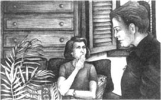
这则离奇又伤感的故事帮我解开了围绕阿利格拉的谜团。她还活着吗？不。但是她的灵魂还在世上，没有散去。出现在我房间里的小女孩就是克莱尔·克莱尔蒙特的女儿阿利格拉的幽灵。因为想跟妈妈在一起，她不开心，也无法安息，但是她无法找到妈妈。她知道妈妈在巴尼奥阿里波，却不知道该怎么去那儿。所以她忧伤的灵魂留在了世上，并且附在基娅拉的女儿阿利格拉·亨德森的身体上。到了夜里，她就离开阿利格拉的身体，去我的房间里求助。然后可怜的阿利格拉与克莱尔的女儿阿利格拉一样，死于发热。可是幽灵阿利格拉依然无法安息，仍要找到一个可以附体的孩子。
“那个小孩会是谁呢？”我问自己，“谁会是下一个阿利格拉——阿利格拉三？”
其实我已经知道答案了。在佛罗伦萨我所寄宿的意大利家庭里的小女儿，名字就叫阿利格拉，到4月21日她就正好5岁零3个月。
而现在是4月20日的傍晚。
我立刻离开了酒吧，往那户人家里跑去。我到达时，女孩的妈妈正在哭。
“阿利格拉住院了，”她告诉我，“她烧得很厉害，医生也不知道为什么。天哪！但愿她没有危险，能很快好起来。”
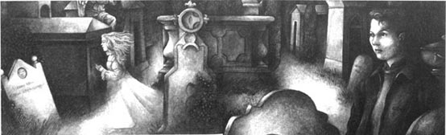
“她不会有事的，”我说，“她会好的。”
可是，晚上回到房间里，我禁不住暗自祈祷：“千万不要，不要这样！”
我在房间里来回走着，又想起了我的朋友阿利格拉·亨德森。我害怕这第三个阿利格拉会在第二天死去。可是我能为此做什么呢？
“不行！一定不能让这个阿利格拉死去！”我懊恼地说道。
这时，我突然想到该怎么做了。我等待着。时间在不停地流逝，10点，11点，午夜。“来吧，一定要来呀！”我念叨着。
我看了看表，已经12点一刻了。
“她会来吗？会出现吗？”我焦急地一遍遍问自己。
就在那一刻，她现身了：拜伦勋爵女儿的幽灵！那个面色苍白，金发碧眼的漂亮女孩。她对我露出了笑容。
“你要带我去找妈妈吗？”
“是的，阿利格拉。我们要去巴尼奥阿里波，不过我们得抓紧。快，咱们走吧！”她开心地笑了。“啊，谢谢你，你真是太好了！”
我拉着她冰冷的小手，走出房间，上了我的车。在夜色中，我的车开得飞快。
“哦，我就要见到亲爱的妈妈了！”阿利格拉说，“过了这么多年，我终于能和妈妈在一起了，我们该有多幸福啊！我爱妈妈，妈妈也爱我。可是爸爸把我从她身边带走，送我去了修道院学校。我不喜欢那儿，在那儿又冷又孤单。妈妈和爸爸都没有来看我，他们为什么不来呢？”
讲到这儿，她却又笑了，还唱起一首意大利歌曲。
我们到达巴尼奥阿里波时，阿利格拉从车上跳下来，四处张望。
“妈妈在哪儿？”她嚷道。
“跟我来。”我对她说。
我带她走进墓地，来到克莱尔·克莱尔蒙特的墓碑前。
“她在这儿，”我说，“你的妈妈就在这儿。”
阿利格拉读着墓碑上的名字。
“妈妈？”她呼喊着，“你在吗？是我，阿利格拉。我来了，你的女儿阿利格拉来了。”她欣喜地呼唤着。
我也很高兴，却又感到害怕。墓地里漆黑一片，寂静无声，四周只有轻风搅动树叶的声音，而这小女孩的幽灵就站在我的眼前，穿着白色睡裙，呼唤着她死去的妈妈。
“是的，我听到你了，妈妈！”阿利格拉大声说，“我来了，我来了……”
说着，阿利格拉的幽灵开始慢慢消散，声音也渐渐飘向了远方。
“等着我，妈妈！我来了……我来了……”
然后幽灵消失了。阿利格拉终于和妈妈团聚了。
6．Allegra Four
6
Allegra Four
At eight o'clock the next morning Allegra's mother came to my room and woke me up. She had a big smile on her face.
'My Allegra is much better!' she said. 'The doctor telephoned early this morning. He says that the fever has gone. It went suddenly last night. She's going to get well. Oh, I'm so happy! I'm going to the hospital to bring her home. Would you like to come with me?'
So we went to the hospital and I saw Allegra. She looked a little tired but she was well. Perhaps you can understand how I felt. Allegra Henderson was dead — but I felt that she was alive again!
That was on April 21st, eight years ago.
And now? Well, six years ago I met an Italian girl and we fell in love. We got married and a year later my wife had a baby girl. She's got long black hair and green eyes. Her face is pale but beautiful. She is tall for her years. She speaks English and Italian very well, but she can't say 'r'. Yes, she's like my little friend Allegra who died twelve years ago. But she's a happy child.
Today I've asked her lots of times, 'How are you? Do you feel well?'
'Yes, Daddy, of course I feel well,' she says. And she laughs.
'Are you sure?'
'Yes! I feel fine. Why?'
But I don't want to tell her why. You see, today is April 20th and tomorrow my daughter will be five years and three months old.
Oh! I forgot to tell you her name! But you know it already — don't you?
get married to take (a person) in marriage （与……）结婚
阿利格拉四
6． 阿利格拉四
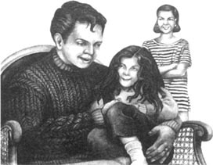
第二天早晨8点，阿利格拉的妈妈到我的房间叫醒了我。她的脸上挂着灿烂的笑容。
“我的阿利格拉好多了！”她说，“医生一早打来电话，说她的烧已经退了，是昨天夜里突然好的。她正在恢复，这让我太高兴了！我要去医院接她回家，你愿意跟我去吗？”
而后我们一起去了医院。我见到了阿利格拉，她看起来有些疲倦，但是很健康。你也许能猜出我当时的感受吧：已经去世的阿利格拉·亨德森似乎又复活了！
那一天是8年前的4月21日。
现在如何？6年前我结识了一个意大利女孩，我们相爱、结婚，婚后一年我们的小女儿诞生了。她长着黑色的长发，绿色的眼睛，面色苍白，但是很漂亮。她在同龄的孩子中是高个子，会说流利的英语和意大利语，但却不会发字母“r”的音。没错，她很像我的朋友，12年前去世的阿利格拉，不过她是个快乐的孩子。
今天我不停地追问女儿：“怎么样？你感觉好吗？”
“很好，爸爸，当然很好。”她笑着回答。
“你确定？”
“是的！我好极了。您为什么问这个？”
我可不想把原因告诉她。知道吗，今天是4月20日，而明天我的女儿就5岁零3个月了。
哦！我忘记告诉你她的名字了！不过你已经知道了，对吗？
ACTIVITIES: Before Reading
ACTIVITIES
Before Reading
1．Read the story introduction of the book. How much do you know now about The Mystery of Allegra? Tick one box for each sentence.
1) There are two girls called Allegra.
YES □／NO □
2) The name 'Allegra' means 'happy'.
YES □／NO □
3) The first Allegra is ten years old.
YES □／NO □
4) She is never unhappy.
YES □／NO □
5) She has a friend called Adrian.
YES □／NO □
6) The second Allegra is there every morning.
YES □／NO □
7) She has cold hands and a cold face.
YES □／NO □
2．What is going to happen in the story? Can you guess? Tick one box for each sentence.
1) A girl called Allegra will die.
YES □／NO □
2) Adrian will be in danger.
YES □／NO □
3) Adrian will help a girl called Allegra.
YES □／NO □
4) A girl called Allegra will kill somebody.
YES □／NO □
5) Adrian will find out that the second Allegra is not a real person.
YES □／NO □
6) There will be four girls called Allegra in this story.
YES □／NO □
ACTIVITIES: While Reading
ACTIVITIES
While Reading
1．Read Chapter 1. Are these sentences true (T) or false (F)? Rewrite the false ones with the correct information.
1) Adrian met Allegra twelve years ago.
2) Adrian and his parents were on holiday in France.
3) Margaret Henderson was Italian.
4) Margaret had a daughter and a granddaughter.
5) Adrian didn't wake up in the night.
6) A little girl came into Adrian's room in the night.
7) Allegra said that her mother was in the house.
8) Adrian didn't see how Allegra left his room.
9) Adrian didn't see anybody in the next bedroom.
10) Chiara said that Allegra sometimes walked in her sleep.
2．Read Chapter 2. Choose the best question-word for these questions and then answer them.
Who/Where
1) ... had long black hair and brown eyes?
2) ... couldn't go to sleep at first because he was afraid?
3) ... did Allegra want to go?
4) ... did Chiara's husband live?
5) ... wanted to see her father?
6) ... wanted to see her mother?
3．Read Chapter 3, then answer these questions.
1) Why didn't Allegra answer Adrian's letters?
2) How old was Allegra when she died?
3) Why did Adrian go to Florence?
4) Who had the same name and birthday as Allegra Henderson?
5) Who came to Adrian's room at midnight?
6) Where did Adrian go the next morning?
7) When and where did Claire Clairmont die?
4．Before you read Chapter 4，what can you guess about the mystery of Allegra? Choose Y(Yes) or N(No) for each sentence.
1) Claire Clairmont had a daughter called Allegra. Y/N
2) Claire Clairmont's daughter died when she was five. Y/N
3) The first Allegra's father was an English poet. Y/N
4) Claire Clairmont didn't love her daughter. Y/N
5) Allegra was living with her father when she died. Y/N
6) Adrian was the only person who ever saw the ghost of Allegra. Y/N
5．Read Chapter 4 and check your guesses. Then answer these questions.
1) What was Allegra's father's name?
2) Who chose the name Allegra?
3) Why did Claire give Allegra to her father?
4) Where did Byron send Allegra when she was four?
5) Who went to visit Allegra?
6．Read Chapter 5. Who said this, and to whom?
1) 'Allegra is in hospital.'
2) 'She'll get better.'
3) 'We're going to Bagno a Ripoli.'
4) 'Where is Mamà?'
5) 'I'm here, your Allegra is here.'
7．Read Chapter 6. Here are some untrue sentences. Rewrite them with the correct information.
1) The doctor said that the third Allegra was going to die.
2) Adrian married an English girl.
3) Adrian and his wife had a baby boy.
4) Adrian's child doesn't speak English.
5) Adrian's daughter is an unhappy child.
8．Now answer these questions.
1) What is Adrian's daughter's name?
2) When is her birthday?
3) Is she going to die on April 21st?
ACTIVITIES: After Reading
ACTIVITIES
After Reading
1．Match these halves of sentences to explain the mystery of Allegra. Use these words to join your sentences.
and /and/because/but/but/but/when
1) Claire Clairmont's daughter, Allegra, died in 1822, ______
2) She was unhappy ______
3) She wanted to go to Bagno a Ripoli ______
4) So she came to Adrian's room at night ______
5) ______ Allegra Henderson died,
6) Then the third Allegra became ill too, ______
7) He took the ghost Allegra to Bagno a Ripoli ______
8) she wanted to be with her mother.
9) she found her mother there.
10) asked him for help.
11) the ghost went to live in the body of the Italian family's Allegra.
12) her ghost lived in the body of Allegra Henderson.
13) Adrian knew how to help her.
14) she couldn't get there alone.
2．Read this description of Allegra One. Then write similar descriptions of Allegra Two, Allegra Three, and Allegra Four. Make any changes that are necessary.
Claire Clairmont's daughter was called Allegra, but she was often sad. She was tall and pale and she had big blue eyes and long blond hair. She could speak English and Italian but she couldn't say the letter 'r'. She was born on January 21st and she died on April 21st, when she was five years old.
3．Imagine that in June 1821 Claire went to see Byron and asked to see Allegra. Complete their conversation. Use as many words as you like.
CLAIRE:
You must let me see Allegra. Why did you send her to that terrible convent school?
BYRON:
Because ______.
CLAIRE:
No, it isn't. I'm sure that ______. I'm going to take her away.
BYRON:
Well, you can't. I've told the nuns ______.
CLAIRE:
You're so unkind. I'm Allegra's mother. And I know that she's ill.
BYRON:
How ______?
CLAIRE:
I ______. I think that she's going to die.
BYRON:
Of course she ______.
CLAIRE:
You don't love her. You don't want her with you, so why ______?
BYRON:
Because she must ______.
4．Here is a new illustration for the story. Find the best place in the story to put the picture, and answer these questions.
The picture goes in Chapter ______.
1) Who are the two people in the picture?
2) Where are they going?
3) Why?
Now write a caption for the illustration.
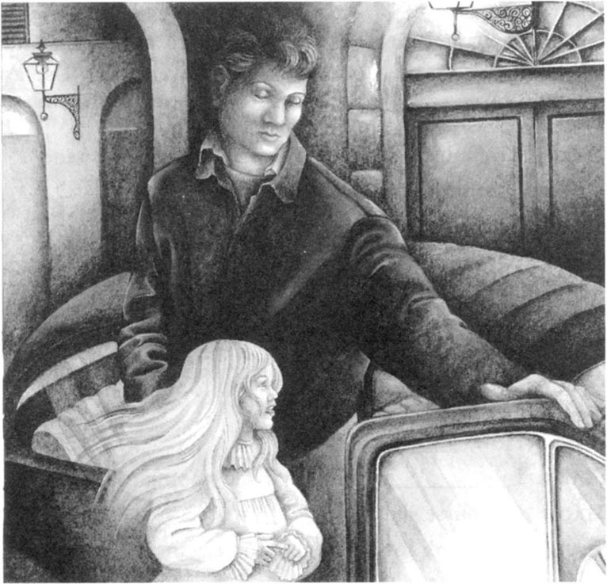
Caption: ___________________________________
5．Do you agree (A) or disagree (D) with these sentences? Explain why.
1) Claire Clairmont was wrong to give Allegra to Byron.
2) Byron was a very bad father.
3) Chiara Henderson was wrong to take her daughter to Italy when her husband still lived in England.
4) It was dangerous for Adrian to call his daughter Allegra.
5) Allegra One wasn't a ghost; she was just Adrian's dream.
6．Fill in the gaps in this text about ghosts. Use these words.
afraid, cold, dead, locked, night, rest, room, see, unhappy, wear
They say that ghosts are ______ people who cannot ______. They are usually ______. Ghosts come at ______; they often ______ white clothes, and they are ______ when you touch them. They can come into a ______ when the door and windows are ______. When they leave, you don't ______ where they go. People are often ______ of ghosts.
7．Now discuss your answers to these questions.
1) Do you believe in ghosts?
2) Have you or any of your friends ever seen a ghost?
3) Have you seen any films or TV programmes about ghosts?
4) Would you like to see a ghost? Why or why not?
封底